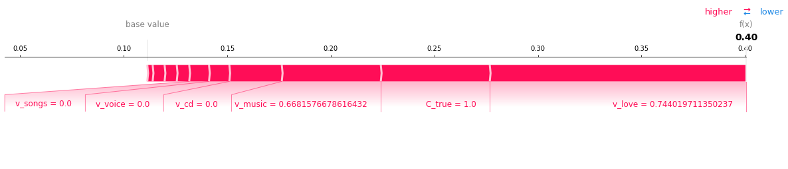

from causalnlp import CausalInferenceModel
from causalnlp import AutocoderExamples
Various examples of CausalNLP on semi-simulated or real datasets.
What is the causal impact of a positive review on product views?
We use a semi-simulated dataset generated from this repo, which is available in the sample_data folder. The reviews and product types are real, while the outcomes (e.g., 1=product clicked, 0=not clicked) are simulated.
import pandas as pddf = pd.read_csv('sample_data/music_seed50.tsv', sep='\t', on_bad_lines='skip')df.head()| index | id | rating | product | text | summary | price | T_true | C_true | Y_sim | negative | positive | T_ac | |
|---|---|---|---|---|---|---|---|---|---|---|---|---|---|
| 0 | 7 | 0001388703 | 1.0 | mp3 music | buy the cd. do not buy the mp3 album. downlo... | Buy the CD. Do not buy the MP3. | 13.01 | 0 | 0 | 0 | 0.548733 | 0.451267 | 0 |
| 1 | 8 | 0001388703 | 5.0 | mp3 music | takes me back to my childhood! | Love it! | 13.01 | 1 | 0 | 0 | 0.008373 | 0.991627 | 1 |
| 2 | 12 | 0001388703 | 5.0 | audio cd | the passion and ingenuity of green's music is ... | No one like Keith Green | 13.01 | 1 | 1 | 1 | 0.043761 | 0.956239 | 1 |
| 3 | 13 | 0001388703 | 5.0 | mp3 music | keith's music is a timeless message. since hi... | Never Gets Old | 13.01 | 1 | 0 | 1 | 0.038876 | 0.961124 | 1 |
| 4 | 15 | 0001377647 | 5.0 | audio cd | i have fallen in love with john michael talbot... | Talbot a masterpiece | 18.99 | 1 | 1 | 1 | 0.019828 | 0.980172 | 1 |
Y_sim is the simulated outcome indicating whether or not the product was clicked. C_true is a categorical variable, where 1 is an audio CD and and 0 is something else (e.g., MP3). In this dataset, outcomes were simulated such that C_true is a counfounding variable for this problem.
The treatment is whether or not the review is positive, which affects Y_sim. Let’s pretend we don’t have a rating and need to infer this from text using the Autocoder. This can be done with:
ac = Autocoder()
df = ac.code_sentiment(df['text'].values, df, batch_size=16, binarize=True)
df['T_ac'] = df['positive']We’ve already created this as the T_ac column (along with the positive and negative columns), so invoking the above is not needed. Note that T_ac is an imperfect approximation of T_true. In CausalNLP, we can include the raw text as covariates to improve our estimates.
Let’s fit the causal inference model. We will adjust for both C_true and the raw text of the review to minimize bias from confounding. CausalNLP supports the following metalearners: S-Learner, T-Learner, X-Learner, and R-Learner. See this paper for more information on these. We will use the T-Learner as the metalearner here. By default, T-Learners use LightGBM classifiers with 31 leaves. Let’s increase the number of leaves to 500. In practice, you can supply a learner with hyperparameters that you’ve tuned beforehand to accurately predict the outcome.
from lightgbm import LGBMClassifier
from sklearn.linear_model import LogisticRegression, LinearRegression
cm = CausalInferenceModel(df, method='t-learner',
learner=LGBMClassifier(num_leaves=500),
treatment_col='T_ac',
outcome_col='Y_sim',
text_col='text',
include_cols=['C_true'])
cm.fit()outcome column (categorical): Y_sim
treatment column: T_ac
numerical/categorical covariates: ['C_true']
text covariate: text
preprocess time: 1.118110179901123 sec
start fitting causal inference model
time to fit causal inference model: 10.667636632919312 sec<causalnlp.causalinference.CausalInferenceModel>Average Treatment Effect (ATE)
We can calculate the overall average treatment effect (ATE) as follows:
cm.estimate_ate(){'ate': 0.1309311542209525}The overall ATE is an increase of 13 percentage points in probability.
Unlike machine learning, there is no ground truth to which our estimate can be compared for causal inference on real-world datasets. Hoewver, since this is a simulated dataset, we can compare our estimate with the ground truth ATE of 0.1479 (14.79 percentage point change in outcome), and our estimate is close.
from collections import defaultdict
import numpy as np
def ATE_adjusted(C, T, Y):
x = defaultdict(list)
for c, t, y in zip(C, T, Y):
x[c, t].append(y)
C0_ATE = np.mean(x[0,1]) - np.mean(x[0,0])
C1_ATE = np.mean(x[1,1]) - np.mean(x[1,0])
return np.mean([C0_ATE, C1_ATE])
print(ATE_adjusted(df.C_true, df.T_true, df.Y_sim))0.14785542719890196Such oracle estimates are not available for real-world datsets, as mentioned. For real-world scenarios, we can, at least, evaluate the robustness of the ATE estimate to various data manipuations (i.e., sensitivity analysis or refutation).
cm.evaluate_robustness()| Method | ATE | New ATE | New ATE LB | New ATE UB | Distance from Desired (should be near 0) | |
|---|---|---|---|---|---|---|
| 0 | Placebo Treatment | 0.130931 | 0.00477642 | -0.00452705 | 0.0140799 | 0.00477642 |
| 0 | Random Cause | 0.130931 | 0.131122 | 0.122196 | 0.140049 | 0.000191267 |
| 0 | Subset Data(sample size @0.8) | 0.130931 | 0.129383 | 0.117239 | 0.141528 | -0.0015477 |
| 0 | Random Replace | 0.130931 | 0.130196 | 0.121209 | 0.139184 | -0.000734766 |
Here, we see the distance from the desired value is near zero for each sensitivy analysis method , which is good.
Conditional Average Treatment Effect (CATE)
We can also calculate the conditional average treatment effects (CATE). For instance, here is the treatment effect for those reviews that mention the word ``toddler.’’
series = df['text']
cm.estimate_ate(df['text'].str.contains('toddler')){'ate': 0.15559234254638685}Individualized Treatment Effect (ITE)
We can easily predict the treatment effect for new or existing observations on a per-unit basis. We just need to make sure the DataFrame supplied as input to CausalInferenceModel.predict contains the right columns. This can easily be checked with CausalInferenceModel.get_required_columns:
cm.get_required_columns()['T_ac', 'C_true', 'text']test_df = pd.DataFrame({
'T_ac' : [1],
'C_true' : [1],
'text' : ['I love the music of Zamfir and his pan flute.']
})cm.predict(test_df)array([[0.40062776]])Model Interpetability
We can use the interpret method to identify the attributes most predictive of individualized treatment effects across observations. Features begnning with v_ are word (or vocabulary) features. We see that words like “music”, “cd”, and “love” in addition to the categorical attribute C_true (the known confounder which is 1 for audio CDs) are most predictive of individualized causal effects.
cm.interpret(plot=False, method='feature_importance')[1][:10]v_music 0.079042
v_cd 0.066838
v_album 0.055168
v_like 0.040784
v_love 0.040635
C_true 0.039949
v_just 0.035671
v_song 0.035362
v_great 0.029918
v_heard 0.028373
dtype: float64cm.explain(test_df, row_num=0)
## What is the causal impact of having a PhD on making over $50K?
Text is Optional in CausalNLP
Despite the “NLP” in the name, CausalNLP can be used for causal analyses on traditional tabular datasets with no text fields.
Note: This dataset is from the early to mid 1990s, and we are using it as a toy dataset for demonstration purposes only.
import pandas as pddf = pd.read_csv('sample_data/adult-census.csv')
df = df.rename(columns=lambda x: x.strip())
df = df.applymap(lambda x: x.strip() if isinstance(x, str) else x)
filter_set = 'Doctorate'
df['treatment'] = df['education'].apply(lambda x: 1 if x in filter_set else 0)
df.head()| age | workclass | fnlwgt | education | education-num | marital-status | occupation | relationship | race | sex | capital-gain | capital-loss | hours-per-week | native-country | class | treatment | |
|---|---|---|---|---|---|---|---|---|---|---|---|---|---|---|---|---|
| 0 | 25 | Private | 178478 | Bachelors | 13 | Never-married | Tech-support | Own-child | White | Female | 0 | 0 | 40 | United-States | <=50K | 0 |
| 1 | 23 | State-gov | 61743 | 5th-6th | 3 | Never-married | Transport-moving | Not-in-family | White | Male | 0 | 0 | 35 | United-States | <=50K | 0 |
| 2 | 46 | Private | 376789 | HS-grad | 9 | Never-married | Other-service | Not-in-family | White | Male | 0 | 0 | 15 | United-States | <=50K | 0 |
| 3 | 55 | ? | 200235 | HS-grad | 9 | Married-civ-spouse | ? | Husband | White | Male | 0 | 0 | 50 | United-States | >50K | 0 |
| 4 | 36 | Private | 224541 | 7th-8th | 4 | Married-civ-spouse | Handlers-cleaners | Husband | White | Male | 0 | 0 | 40 | El-Salvador | <=50K | 0 |
from causalnlp import CausalInferenceModel
cm = CausalInferenceModel(df, method='t-learner',
treatment_col='treatment',
outcome_col='class',
ignore_cols=['fnlwgt', 'education','education-num']).fit()replaced ['<=50K', '>50K'] in column "class" with [0, 1]
outcome column (categorical): class
treatment column: treatment
numerical/categorical covariates: ['age', 'workclass', 'marital-status', 'occupation', 'relationship', 'race', 'sex', 'capital-gain', 'capital-loss', 'hours-per-week', 'native-country']
preprocess time: 0.4857158660888672 sec
start fitting causal inference model
time to fit causal inference model: 5.035430908203125 secOverall, the average treatment effect of having a PhD is an increase of 20 percentage points in the probability of making over $50K (with respect to this model and dataset):
cm.estimate_ate(){'ate': 0.20340645077516034}For those who have a Master’s degree:
cm.estimate_ate(cm.df['education'] == 'Masters'){'ate': 0.17672418257642838}For those who are high school dropouts:
cm.estimate_ate(cm.df['education'].isin(['Preschool', '1st-4th', '5th-6th', '7th-8th', '9th', '10th', '12th'])){'ate': 0.2586697863578173}## What is the causal impact of a job training program on earnings?
This is another example of causal inference on purely tabular data (no text). Here, we will use the famous LaLonde dataset from a job training study.
import pandas as pd
df = pd.read_csv('sample_data/lalonde.csv')
df.head()| ID | treat | age | educ | black | hispan | married | nodegree | re74 | re75 | re78 | |
|---|---|---|---|---|---|---|---|---|---|---|---|
| 0 | NSW1 | 1 | 37 | 11 | 1 | 0 | 1 | 1 | 0.0 | 0.0 | 9930.0460 |
| 1 | NSW2 | 1 | 22 | 9 | 0 | 1 | 0 | 1 | 0.0 | 0.0 | 3595.8940 |
| 2 | NSW3 | 1 | 30 | 12 | 1 | 0 | 0 | 0 | 0.0 | 0.0 | 24909.4500 |
| 3 | NSW4 | 1 | 27 | 11 | 1 | 0 | 0 | 1 | 0.0 | 0.0 | 7506.1460 |
| 4 | NSW5 | 1 | 33 | 8 | 1 | 0 | 0 | 1 | 0.0 | 0.0 | 289.7899 |
Unlike other meta-learners that use LightGBM as a default, the S-Learner uses Linear Regression as the default base learner for regression problems, which is a model that is often used for this dataset. The ATE estimate is $1548, which indicates that the job training program had an overall positive effect.
from causalnlp import CausalInferenceModel
cm = CausalInferenceModel(df, method='s-learner',
treatment_col='treat',
outcome_col='re78',
include_cols=['age', 'educ', 'black', 'hispan', 'married', 'nodegree', 're74', 're75'])
cm.fit()
print(cm.estimate_ate()) # ATE estimate = $1548outcome column (numerical): re78
treatment column: treat
numerical/categorical covariates: ['age', 'educ', 'black', 'hispan', 'married', 'nodegree', 're74', 're75']
preprocess time: 0.017691612243652344 sec
start fitting causal inference model
time to fit causal inference model: 0.0024728775024414062 sec
{'ate': 1548.2438019996084}